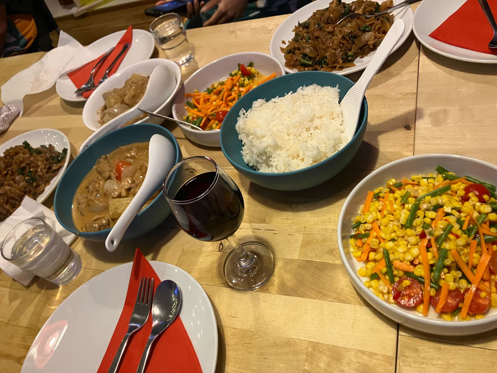

Jan. 19, 2026
Indicative macros: 355 calories 43g protein 20g fat for 2x 85g sea bass fillets from Tesco

I learnt the original version of this dish on a week long cooking course at the School of Wok in Covent Garden, London. It was already very healthy, with the only fat apart from what’s in the fish coming from some oil used to fry off the sauce ingredients. I tested the sauce without using oil and it works well. I’ve also tested using sea bass fillets, in case you can’t get a whole sea bass or don’t want to go through the rigmarole of scaling, gutting, and de-finning one.
Nov. 16, 2025
Makes two portions, each 386 kcal / 43.9g protein / 23.5g fat.

- 500g skinless boneless chicken thighs
- 1 jalapeno
- 10g garlic
- 30g ginger
- 1 tsp turmeric
- 1.5 tsp fine sea salt
- 30ml rice vinegar
- Peel the garlic, slice or peel the skin off the ginger and roughly chop both, along with the jalapeno.
- Using a spice grinder or small food processor, whizz all the ingredients up except for the chicken.
- Fat trim the chicken thighs and chop into roughly 3 by 3 inch squares. Mix in a bowl or ziploc bag with the marinade.
- Preheat the oven to 180C fan. While it preheats, thread half the chicken onto a metal skewer. Repeat with a second skewer and the rest of the chicken.
- Cook for 25-30 minutes, rotating each skewer halfway through.
Serve with rice, greek yoghurt and shredded carrots and sliced red onions.
Sep. 24, 2025
Thai Made Easy cooking class with Yui Miles Friday 12th September 2025
- Fish sauce - they bury the anchovies in the ground to ferment them. She went to the Squid brand fish sauce factory when she was in Thailand - they show you the anchovies they use and how they make the fish sauce.
- Shrimp paste - made up of really small prawns.
- Thailand - like India, they have limes rather than lemons. You can get lemons for the 10x the price of limes as they are imported. Believe that the climate is too humid or not humid enough [forgot which] for lemons to grow.
- Building a table - just one type of curry, a stir fried dish, a salad, rice, and a soup. Thai people like to be generous with food and so the idea is to make one more dish than the number of people you’ve invited. So if there are four of you at the table, make 5 dishes.
- Favourite Thai desserts - Thai people don’t tend to have desserts, usually we have fruit. But she likes mango with sticky rice, and her favourite is coconut ice cream. As well as the banana in coconut milk I mentioned.
